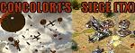
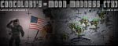

.:: Concolor1's Siege ::.

The information gathered by this outpost is of key interest to the Allied high command, and it has therefore fallen to you, commander, to hold the command center in this base. Having already shipped out and air-dropped into the battlezone, you must waste no time in organizing your defenses before the Soviet bombardments and following attacks ensue. Commander, defending this vitally important outpost will by no means be an easy task. Should the base remain standing and all traces of the Soviet blight in the zone be eradicated, your promotion in the ranks will be guaranteed!
This mission features many modifications, new units, and new graphics, several courtesy of some rather familiar names in the community (see the readme file for full credits). There are also quite a few Easter eggs to be found... not all of them are nice, and can contribute to different experiences if you play the mission multiple times.
The mission is launched just like a mod, using XCC Mod Launcher, so there's no need to manually place files into your game directory and then manually remove them later. The mod launcher deletes the files automatically when you are finished playing. If you wish, you may save the game during one session and then resume it later (after re-launching of course).
Size: 1500 kbs
Downloads: 315
.:: Concolor1's Moon Madness ::.

This Moonbase appears to be one of the key elements in the funding behind the Soviet war efforts, and tapping into the moons hidden resources is what the Soviets have set about doing. A small Allied base has been established in a hidden crevas close to the Soviet operations. Use the limited units available and destroy the Soviet Robot Command Center, once offline the Russian facilitiy will be relatively undefended and ours for the taking.
Objective 1: Destroy the Soviet Robot Command Center.
Size: 488 kbs
Downloads: 283